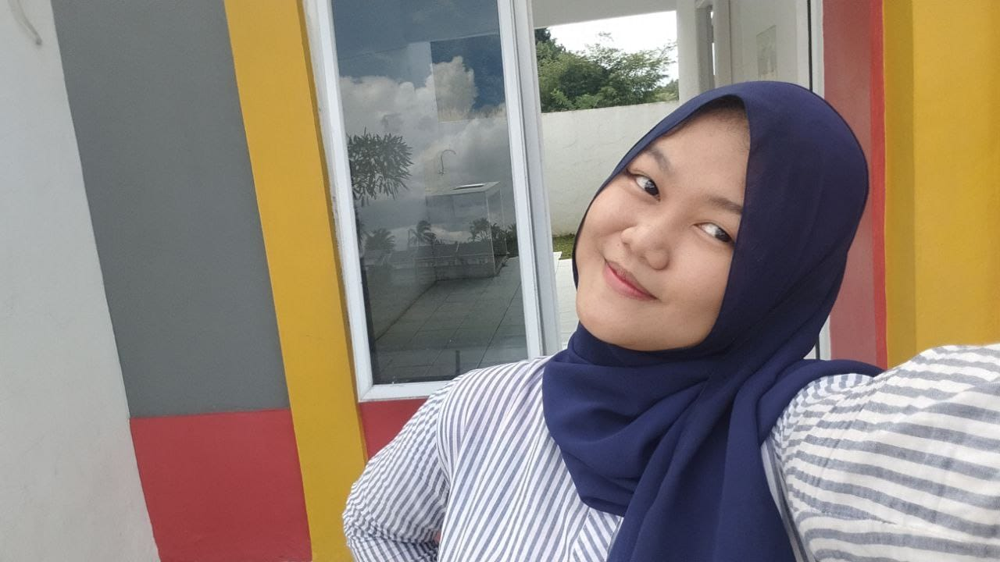

Saya Nadira Aulia Dewi seorang mahasiswa semester 6 Jurusan Sistem Informasi di STT Terpadu Nurul Fikri, angkatan 2022. Saat ini, saya sedang menempuh program Studi Independen Bersertifikat di NF Academy sebagai Fullstack Web Developer. Program ini memberikan saya kesempatan untuk mengembangkan keterampilan teknis dan praktis dalam pengembangan web. Selama menempuh pendidikan, saya telah mempelajari berbagai mata kuliah yang berkaitan dengan teknologi informasi, seperti pemrograman, basis data, analisis sistem, dan manajemen proyek. Selain itu, saya juga aktif mengikuti berbagai kegiatan kampus yang membantu saya mengembangkan soft skills.
Saya berharap skill ini dapat menghantarkan saya menjadi seorang Fullstack Web Developer yang kompeten dan mampu berkontribusi dalam pengembangan teknologi informasi di Indonesia.